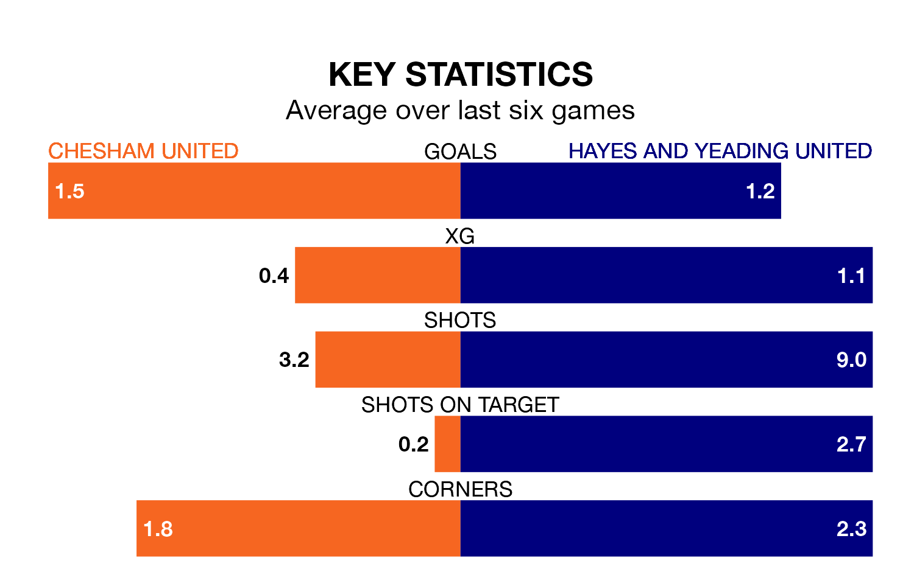

Hayes and Yeading United travel to the Meadow looking to secure a first win in six Southern League Premier – South games against Chesham United on Friday.
Hayes & Yeading have lost three and drawn two matches since they last earned three points – against Beaconsfield Town on February 10.
They face a Chesham side who have won two and drawn two over that time.
With 72 goals in 36 games so far this season, Chesham are the league's highest scorers with 2.0 goals per game. And they are conceding fewer than average, letting in 37 goals at a rate of 1.0 per game.
Hayes & Yeading, meanwhile, are below average scorers, with 1.5 goals per game, compared to a league average of 1.7. They have conceded 1.6 goals per game.
Chesham United are top of the table after 36 games, of which they have won 25 and drawn six, earning 81 points.
Hayes and Yeading United are 16 places behind the home team in 17th, with nine wins and 11 draws putting them on 38 points.
In the last 10 years, Chesham and Hayes & Yeading have played each other on nine occasions. Chesham won five of them, Hayes & Yeading three, and they drew once.
On average, Chesham scored 2.0 goals and Hayes & Yeading 1.1 in those matches.
Their last meeting was on August 15, when Chesham won 2-1 away.
Chesham's last match was on Saturday, a 1-1 draw against Basingstoke Town.
Hayes & Yeading drew 2-2 with Swindon Supermarine last time out, also on Saturday.
Updated: 12:16 (UTC), 25/03/24